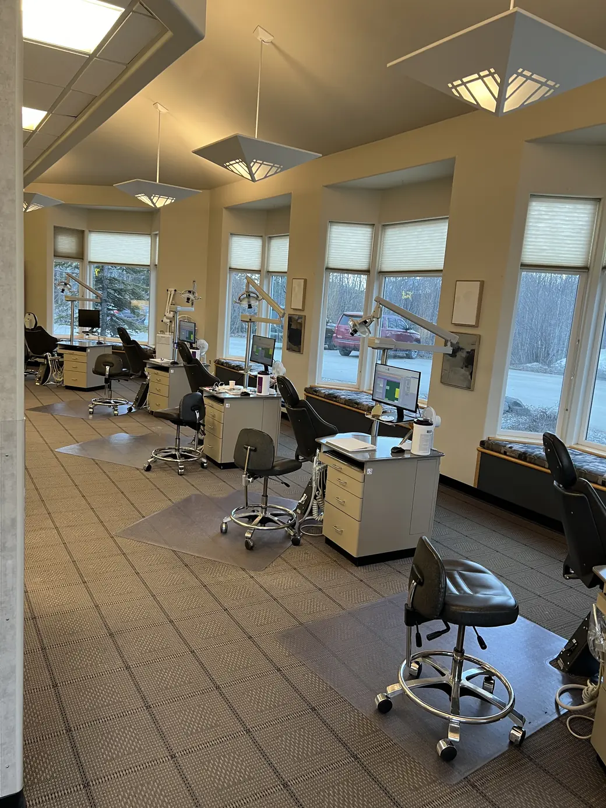
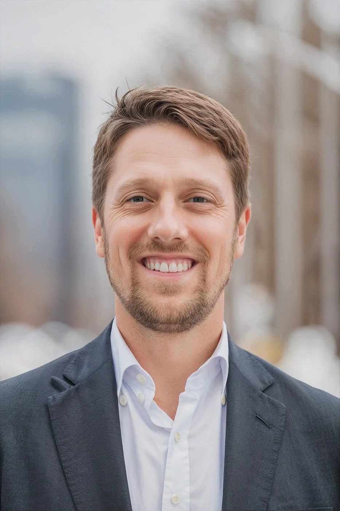
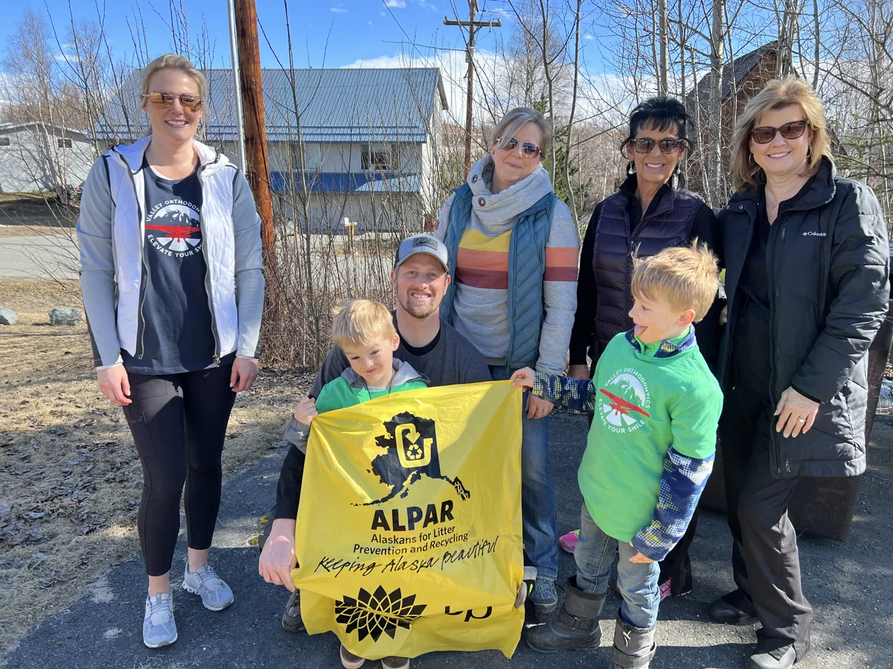

Valley OrthodonticsBraces and Invisalign
in Wasilla, Alaska.
Treatment for kids, teens and adults with Dr. Jeremy Haines, a board-certified orthodontist serving Wasilla and Palmer.

Board-certified orthodontist
Dr. Jeremy Haines, treating children, teens and adults in Wasilla.
Orthodontics only
The only practice in Wasilla limited to orthodontics.
Free first consultation
Includes a TMJ analysis. Appointments are arranged by phone.
Alaska grown
Locally owned and independent, serving Wasilla, Palmer and the Mat-Su Valley.
Orthodontic treatment
Explore treatment for children, teens and adults with Dr. Jeremy Haines.
Braces
Metal and clear braces for children, teens and adults, planned around the result you want. Still the most predictable way to correct a complicated bite.
Learn moreInvisalign
Clear aligners you take out to eat and to brush. At your consultation Dr. Haines will tell you honestly whether they suit the result you are after.
Learn moreEarly intervention
A first orthodontic check while a child is still growing. Catching a problem early can shorten later treatment, and sometimes avoid it altogether.
Learn moreSplint therapy
For jaw pain, clicking and clenching. Your free consultation includes a TMJ analysis, so this starts with working out what is actually going on.
Learn moreSurgical orthodontics
For bites that braces alone cannot correct, planned together with an oral surgeon. Ask whether your case needs it at your free consultation.
Learn moreRetainer Assurance
Keeping your result after treatment ends. Ask about the program at your consultation, along with touch-up treatments if teeth have moved since.
Learn more
Meet Dr. Jeremy Haines
Board-certified orthodontist
Dr. Haines provides orthodontic care for children, teens and adults at our Wasilla office.
Valley Orthodontics is Wasilla’s only orthodontics-only practice. Ask Dr. Haines about braces, Invisalign and the treatment options appropriate for you.
Get to know Dr. Haines
Your first consultation
Schedule a visit
Call our Wasilla office to arrange your free consultation. Let us know whether the visit is for you or your child.
Discuss treatment
Bring your questions about braces, Invisalign and what you want from treatment.
Review timing and cost
Discuss the recommended plan, cost and timing before deciding how to move forward.
Thinking about the cost? Explore financing and insurance

Serving Wasilla and Palmer
From Wasilla to Palmer, we welcome families from across the Mat-Su Valley to our Wasilla office.
Looking for braces or Invisalign near Palmer? Get to know Valley Orthodontics and plan your visit.
Orthodontic care for Palmer familiesCommon questions
All frequently asked questionsIs the consultation free?
Yes. Valley Orthodontics offers a free consultation. Call (907) 376-1510 to arrange your visit.
Do you see patients from Palmer?
Yes. We welcome Palmer patients at our Wasilla office at 1001 E. USA Circle, Wasilla, AK 99654.
Can I choose between braces and Invisalign?
Both are available at Valley Orthodontics. Your consultation is the place to ask which options fit your smile and goals.
How much will treatment cost?
Your cost depends on your treatment plan. Talk with our team about costs, financing and insurance. Learn about financing and insurance.
Can adults start orthodontic treatment?
Yes. Valley Orthodontics offers orthodontic care for adults as well as children and teens. Call to explore your options.
Book a free consultation
Call our team to arrange an appointment for yourself or your child.
Scheduling and payment questions
Ask our team about appointment times, financing and insurance when you call.
Call (907) 376-1510Appointments are arranged by phone.
Office hours
- Monday
- 8:00 AM – 4:00 PM
- Tuesday
- 7:30 AM – 4:30 PM
- Wednesday
- 7:30 AM – 4:30 PM
- Thursday
- 8:00 AM – 4:30 PM
- Friday
- 8:00 AM – 1:00 PM
- Saturday–Sunday
- Closed